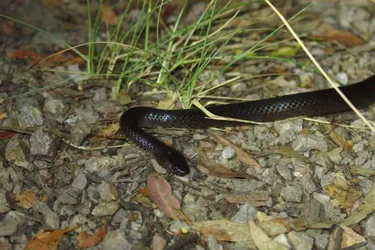

Snakes around Wollongong
New South Wales, Australia · 34.42°S, 150.89°E
Wollongong is a city in New South Wales, Australia. 45 snake species are recorded in New South Wales in SnakeList.
- 45species
- 35venomous
- 10non-venomous
- 4families
- 2found only here
These are the snakes of New South Wales, not of Wollongong itself. SnakeList records snakes by state or territory, not by city, so this page lists the 45 species recorded anywhere in New South Wales, the state or territory Wollongong is in (worked out from the city’s map position). Many of them may not live in or near the city.
Most widely recorded
The species here that have research-grade iNaturalist records in the most places across their whole range - not just in New South Wales. That shows how often people have photographed them, not how many live here.
 Eastern Brown SnakePseudonaja textilis
Eastern Brown SnakePseudonaja textilis Australian black snakePseudechis porphyriacus
Australian black snakePseudechis porphyriacus Mainland Tiger SnakeNotechis scutatus
Mainland Tiger SnakeNotechis scutatus Green Tree SnakeDendrelaphis punctulatus
Green Tree SnakeDendrelaphis punctulatus
Small-eyed SnakeCryptophis nigrescens Yellow-faced Whipsnake (psammophis)Demansia psammophis
Yellow-faced Whipsnake (psammophis)Demansia psammophis Mulga SnakePseudechis australis
Mulga SnakePseudechis australis Mair's KeelbackTropidonophis mairii
Mair's KeelbackTropidonophis mairii
Venomous and non-venomous
Venomous: 35Non-venomous: 10
35 are listed by SnakeList as dangerous to people: Australian black snake Pseudechis porphyriacus, Bandy Bandy Vermicella annulata, Broad-headed Snake Hoplocephalus bungaroides, Common Death Adder Acanthophis antarcticus, Coral Snake Brachyurophis australis, De Vis Banded Snake Denisonia devisi, Dwarf Crowned Snake Cacophis krefftii, Eastern Brown Snake Pseudonaja textilis, Egg-eating Sea Snake Emydocephalus annulatus, Elegant Seasnake Hydrophis elegans, Golden Crowned Snake Cacophis squamulosus, Greater Seasnake Hydrophis major, Grey Snake Hemiaspis damelii, Highlands Copperhead Austrelaps ramsayi, King's Seasnake Hydrophis kingii, Mainland Tiger Snake Notechis scutatus, Marsh Snake (signata) Hemiaspis signata, Mengden's Gwardar Pseudonaja mengdeni, Mulga Snake Pseudechis australis, Mustard-bellied Snake Drysdalia rhodogaster, Myal Snake Suta suta, Olive Sea Snake Aipysurus laevis, Pale-headed Snake Hoplocephalus bitorquatus, Red-naped Snake Furina diadema, Ringed Brown Snake Pseudonaja modesta, Rough-scaled Snake Tropidechis carinatus, Small-eyed Snake Cryptophis nigrescens, Spotted Black Snake Pseudechis guttatus, Stephen's Banded Snake Hoplocephalus stephensii, Strap-snouted Brown Snake Pseudonaja aspidorhyncha and 5 more.
Snake families
Found only here
Recorded in no other state or territory or country in SnakeList’s data. That may mean it lives only here, but it can also mean it has not been recorded elsewhere yet.
- Broad-headed Snake Hoplocephalus bungaroides
- Mustard-bellied Snake Drysdalia rhodogaster
Habitats (rough estimate)
How many of its living snakes have each kind of habitat in SnakeList’s estimate. That estimate comes from every country, state and province where each snake is recorded - not from a survey of New South Wales, and not checked species by species.
Who described them
The scientists who first described its most widely recorded snakes, and when.
- Eastern Brown Snake Pseudonaja textilis - described by Duméril, Bibron & Duméril in 1854 (under another genus name)
- Australian black snake Pseudechis porphyriacus -
- Mainland Tiger Snake Notechis scutatus - described by Peters in 1861 (under another genus name)
- Green Tree Snake Dendrelaphis punctulatus -
- Small-eyed Snake Cryptophis nigrescens -
- Yellow-faced Whipsnake (psammophis) Demansia psammophis -
- Mulga Snake Pseudechis australis -
- Mair's Keelback Tropidonophis mairii -
Names and dates come from SnakeList’s reviewed species accounts; the others are looked up on Wikidata (CC0) when this page opens.
Nearby cities
The closest cities in SnakeList’s city list, as the crow flies.
- Sydney 68 km · New South Wales, Australia
- Newcastle 185 km · New South Wales, Australia
- Canberra 187 km · Australian Capital Territory, Australia
- Melbourne 652 km · Victoria, Australia
- Geelong 717 km · Victoria, Australia
- Gold Coast 754 km · Queensland, Australia
- Logan City 783 km · Queensland, Australia
- Brisbane 800 km · Queensland, Australia
Other cities in New South Wales
All 45 species of New South Wales
- Australian black snake Pseudechis porphyriacus venomous
- Bandy Bandy Vermicella annulata venomous
- Blackish Blind Snake Anilios nigrescens
- Broad-headed Snake Hoplocephalus bungaroides venomous
- Brown-snouted Blind Snake Anilios wiedii
- Children's Python Antaresia childreni
- Common Death Adder Acanthophis antarcticus venomous
- Coral Snake Brachyurophis australis venomous
- De Vis Banded Snake Denisonia devisi venomous
- Dwarf Crowned Snake Cacophis krefftii venomous
- Eastern Brown Snake Pseudonaja textilis venomous
- Egg-eating Sea Snake Emydocephalus annulatus venomous
- Elegant Seasnake Hydrophis elegans venomous
- Golden Crowned Snake Cacophis squamulosus venomous
- Greater Seasnake Hydrophis major venomous
- Green Tree Snake Dendrelaphis punctulatus
- Grey Snake Hemiaspis damelii venomous
- Highlands Copperhead Austrelaps ramsayi venomous
- King's Seasnake Hydrophis kingii venomous
- Mainland Tiger Snake Notechis scutatus venomous
- Mair's Keelback Tropidonophis mairii
- Marsh Snake (signata) Hemiaspis signata venomous
- Mengden's Gwardar Pseudonaja mengdeni venomous
- Mulga Snake Pseudechis australis venomous
- Mustard-bellied Snake Drysdalia rhodogaster venomous
- Myal Snake Suta suta venomous
- Olive Sea Snake Aipysurus laevis venomous
- Pale-headed Snake Hoplocephalus bitorquatus venomous
- Prong-snouted Blind Snake Anilios bituberculatus
- Proximus Blind Snake Anilios proximus
- Red-naped Snake Furina diadema venomous
- Ringed Brown Snake Pseudonaja modesta venomous
- Robust Blind Snake Anilios ligatus
- Rough-scaled Snake Tropidechis carinatus venomous
- Small-eyed Snake Cryptophis nigrescens venomous
- Spotted Black Snake Pseudechis guttatus venomous
- Spotted Python Antaresia maculosa
- Stephen's Banded Snake Hoplocephalus stephensii venomous
- Strap-snouted Brown Snake Pseudonaja aspidorhyncha venomous
- Variable Black-naped Snake Suta dwyeri venomous
- Whip Hooded Snake Suta flagellum venomous
- White-lipped Snake Drysdalia coronoides venomous
- White-naped Snake Cacophis harriettae venomous
- Woma Aspidites ramsayi
- Yellow-faced Whipsnake (psammophis) Demansia psammophis venomous
No snake here matches that.